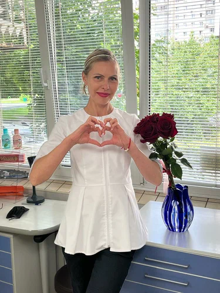
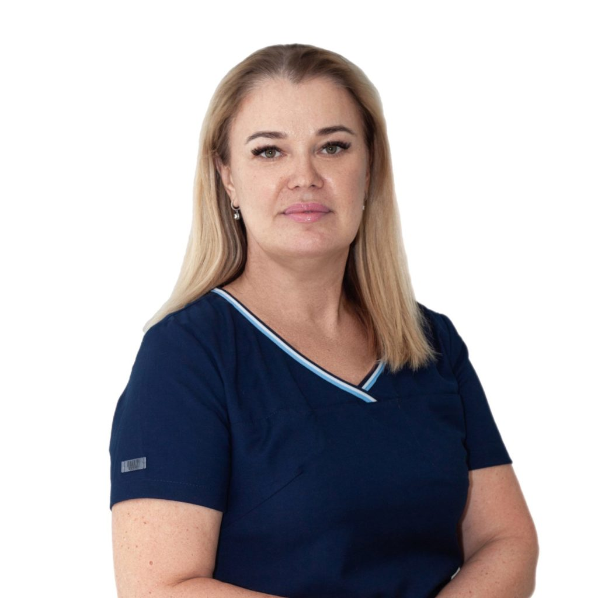
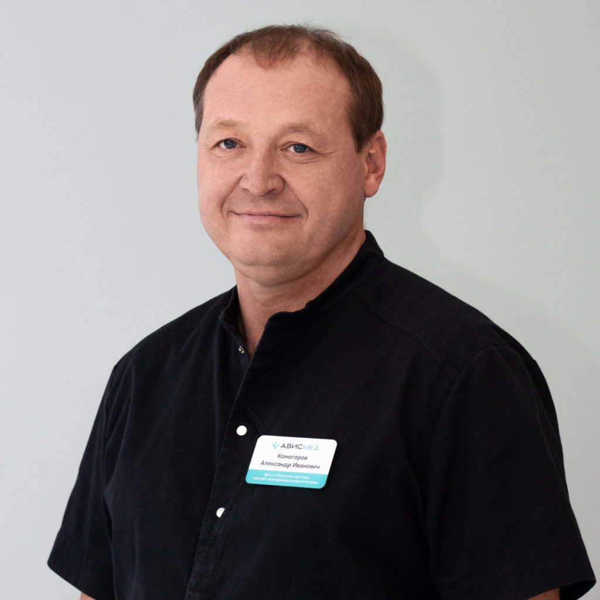
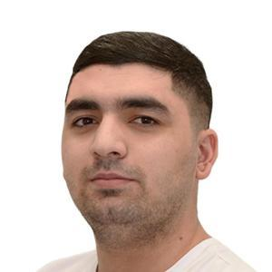

Жигулева Татьяна Сергеевна Врач-стоматолог-терапевт
Основатель и директор клиники «Медиа», практикующий стоматолог-терапевт, имеющий многолетний опыт работы, в том числе в сложных клинический случаях.
Записаться к врачу
О специалисте Образование и квалификация Режим работы
Основатель и директор клиники «Медиа», практикующий стоматолог-терапевт, имеющий многолетний опыт работы, в том числе в сложных клинический случаях. О специалисте: стоматология терапевтическая, лечение каналов зуба (эндодонтия), перелечивание, работа с коффердамом, эстетическая реставрация, лечение десен, пародонтология.
Диплом КБ №48569 от 17.06.1996г. выдан НГМУ г. Новосибирск. Специальность: «Стоматология». Квалификация: «Врач-стоматолог» Интернатура от 30.06.1997г. Специальность Стоматология терапевтическая. «Новосибирский государственный медицинский университет» Диплом о профессиональной переподготовке № 003063 от 07.03.2013 г. выдан 07.03.2013 г.ГБОУ ВПО «Новосибирском государственном медицинском университете» Минздрава России. Специальность: «Организация здравоохранения и общественное здоровье» Удостоверение о повышении квалификации № 080000368395 от 13.03.2023г. выдан АНОДПО «Сибирский институт непрерывного медицинского образования». Специальность: «Стоматология терапевтическая». Действителен до 12.03.2028г. Удостоверение о повышении квалификации № 2025181 от 21.02.2025г. выдан ООО «Медицинская академия профессионального образования». Специальность: «Организация здравоохранения и общественное здоровье». Действителен до 20.02.2030г. Понедельник 15:00-20:00
Вторник 9:00-15:00
Среда 15:00-20:00
Четверг 9:00-15:00
Пятница 15:00-20:00
Суббота 9:00- 15:00
Воскресенье Выходной

Мусихина Елена Николаевна Врач-стоматолог-хирург, врач-стоматолог-терапевт
имеет внушительный опыт работы, специализируется на атравматичном удалении зубов любой сложности, ретинированных зубов, все виды имплантации, костная пластика.
Записаться к врачу
О специалисте Образование и квалификация Режим работы
имеет внушительный опыт работы, специализируется на атравматичном удалении зубов любой сложности, ретинированных зубов, все виды имплантации, костная пластика. Работает различными имплантационными системами : Astra Tech (Швейцария), Neobiotech (Корея), Osstem ( Корея).
В совершенстве владеет проофессиональными навыками стоматолога-терапевта: владеет современными методами эстетической реставрации, лечение каналов зуба ( эндодонтия) , перелечивание .
Диплом КБ №48570 от 17.06.1996г. выдан НГМУ г. Новосибирск. Специальность: «Стоматология». Квалификация: «Врач-стоматолог» Диплом о профессиональной переподготовке № 001948 от 27.06.2007 г. выдан ГБОУ ВПО «Новосибирском государственном медицинском университете» Минздрава России. Специальность: « Стоматология терапевтическая» Диплом о профессиональной переподготовке № 002315 от 30.01.2012 г. выдан ГБОУ ВПО «Новосибирском государственном медицинском университете» Минздрава России. Специальность: « Стоматология хирургическая» Удостоверение о повышении квалификации № 080000368394 от 13.03.2023г. выдан АНОДПО «Сибирский институт непрерывного медицинского образования». Специальность: «Стоматология терапевтическая». Действителен до 12.03.2028г. Удостоверение о повышении квалификации № 2025260 от 07.03.2030г. выдан ООО «Медицинская академия профессионального образования». Специальность: «Стоматология хирургическая». Действителен до 06.03.2030г. Понедельник 11:00-15:00
Вторник 15:00-20:00
Среда 11:00-15:00
Четверг 15:00-20:00
Пятница 11:00-15:00
Суббота 10:00- 15:00
Воскресенье Выходной

Комогоров Александр Иванович Врач-стоматолог-ортопед
ортопед со стажем работы по специальности более 30 лет, имеет высшую квалификационную категорию по специальности «Стоматология ортопедическая».
Записаться к врачу
О специалисте Образование и квалификация Режим работы
ортопед со стажем работы по специальности более 30 лет, имеет высшую квалификационную категорию по специальности «Стоматология ортопедическая». Ведет первичные консультации и составляет комплексные планы лечения, опираясь на результаты цифровой диагностики. Специализация доктора: ортопедическая и эстетическая стоматология. Владеет самыми современными методиками протезирования зубов при помощи безметалловых конструкций с опорой на зубы и дентальные имплантаты. Виртуозно владеет различными методиками сьемного протезирования. Работает в команде со смежными специалистами (хирург, терапевт, пародонтолог, по созданию оптимальных условий для вашей будущей улыбки.
Диплом РВ №455030 от 17.06.1996г. выдан Новосибирским медицинским институтом. Специальность: «Стоматология». Квалификация: «Врач-стоматолог» Диплом о профессиональной переподготовке № 201036 от 17.04.2007 г. выдан ГОУ ДПО «Новокузнецком ГИУВе». Специальность: «Стоматология ортопедическая» Удостоверение о повышении квалификации № 080000604973 от 26.06.2025г. выдан АНОДПО «Сибирский институт непрерывного медицинского образования». Специальность: «Стоматология ортопедическая». Действителен до 25.06.2030г. Вторник 9:00-14:00
Четверг 15:00-20:00
Воскресенье Выходной

Ашматов Асатбек Ашурбоевич Врач-стоматолог
Сведения о специалисте уточняются.
Записаться к врачу
О специалисте Образование и квалификация Режим работы